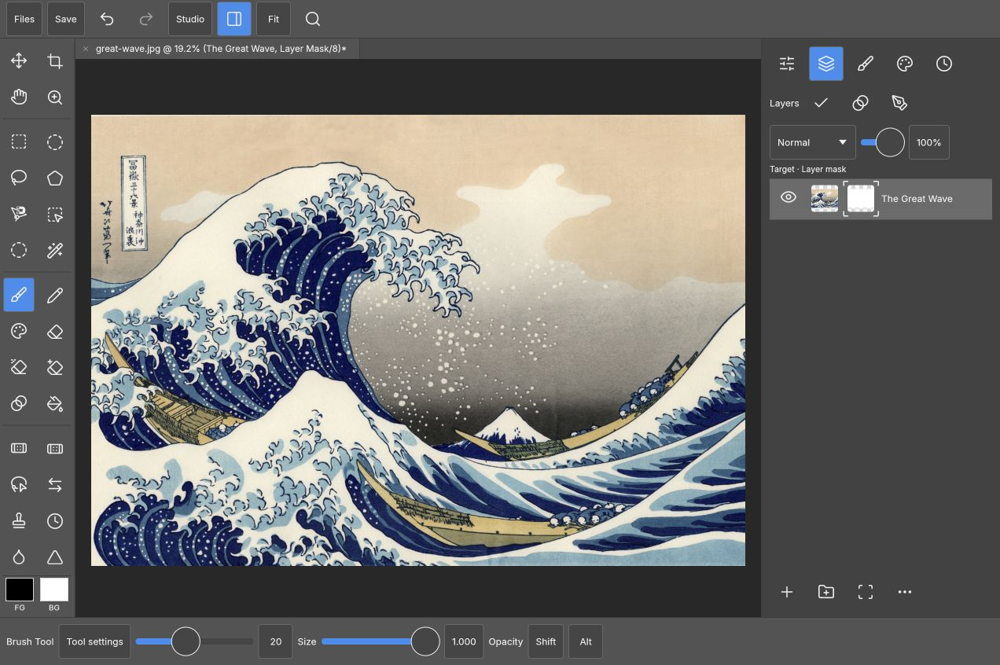

Apple Pencil and touch
The input adapter preserves pressure and tilt, handles coalesced pen samples when available, and separates drawing from two-finger pan and pinch. Measured physical Pencil testing is part of the next pass.
v0.1 / Independent workspace by 1puni
PhotoCraft iPad brings layers, brushes, masks and paths to an iPad browser workspace. Pencil draws. Fingers navigate. Built in Rust on the PhotoCraft engine.
Free, open-source v0.1. A local source build is required to run the editor.

For painting, retouching and layered image editing on iPad, with an interface you can build, inspect and change. This independent workspace connects to PhotoCraft’s shared editor engine.
The input adapter preserves pressure and tilt, handles coalesced pen samples when available, and separates drawing from two-finger pan and pinch. Measured physical Pencil testing is part of the next pass.
Keep image and mask targets distinct. Adjust mask density and feather, reorder layers and groups, and change layer properties in the dock beside your canvas.
Keep foreground and background colours visible. Work with RGB, HSB, Lab D50 and hex values, save named swatches, and explore shared brush dynamics with a live stroke preview.
Run the web photo editor from your own machine and open it on an iPad on the same network. Documents are edited in the browser; Save downloads a file to keep in Files. Save before closing or reloading: automatic recovery is not yet available.